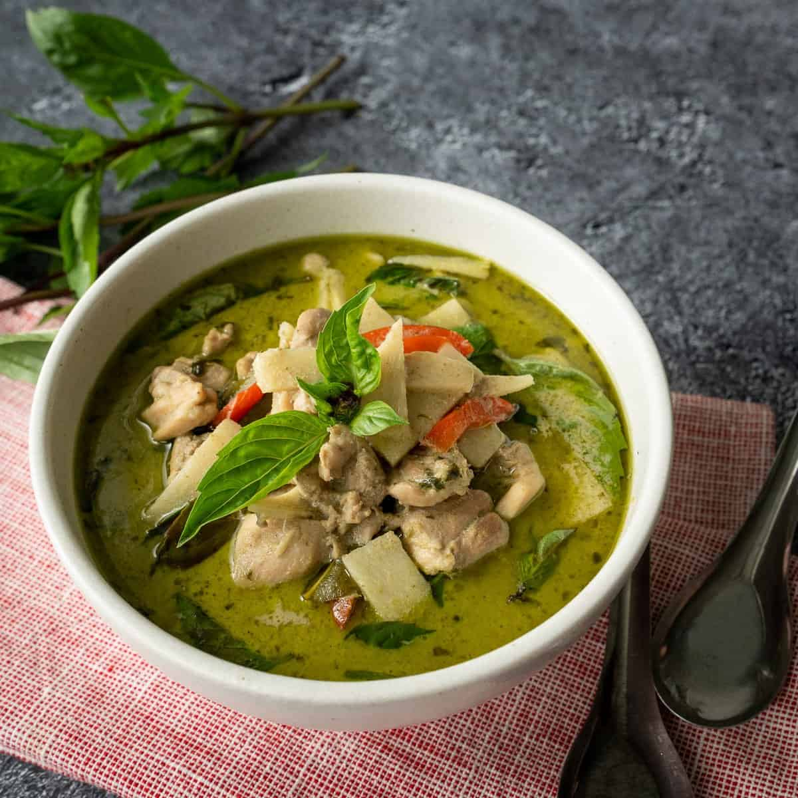

Authentic Thai Green Curry Recipe

Description
An authentic Thai green chicken curry recipe from Hot Thai Kitchen, copyright of Pailin Chongchitnant. One of the most well-known Thai recipes, and one of Pailin's most viewed recipes on YouTube. We'll just be using shop-bought green curry paste to save on some steps, but the full recipe on her site shows you how to make your own. Serves 4. Recipe sourced from here.
Ingredients
- 420ml coconut milk, divided
- 3.5 tbsp of green curry paste, good brands to seek out are Mae Ploy and Aroy-D.
- 240ml of chicken stock, unsalted
- 450g of chicken thighs, boneless, skinless, cut into 2.5cm pieces
- 2 tbsp of finely chopped palm sugar, or light-brown sugar (demerara)
- 1.5-2 tbsp of fish sauce, Squid brand is great if you can find it
- 4 makrut lime leaves (also called kaffir in some places)
- 1550ml can of bamboo shoot strips, drained and rinsed
- ~20g of Thai basil leaves
- 1/4 of a red bell pepper, or any other mild red pepper, julienned
- Jasmine rice for serving
Steps
- Reduce 315ml of the coconut milk until it becomes thick, a sign that it is ready is when the coconut oil starts to separate from the milk, but that's not guaranteed to happen depending on the coconut milk that you've used.
- Add the curry paste to the coconut milk and sauté the mixture, stirring constantly over a medium heat for about 2 minutes until it is aromatic. If any of the paste sticks to the bottom of the pan you can de-glaze it with a little bit of the remaining coconut milk.
- Add the pieces of chicken thigh to the pan and mix it all together.
- Add the chicken stock, remaining 105ml of coconut milk, palm sugar, and 1 tbsp of the fish sauce to the pan. Grab the lime leaves and twist them to release their aroma, then tear them up into small chunks to add to the pan, discarding the central stems in the process. Bring the whole mixture to a simmer and then let it cook gently for 10-15 minutes or until the chicken is tender.
- Now add the bamboo shoots and bring the whole mixture up to a boil. If you prefer your red peppers more cooked then add them at this stage as well. Once it reaches a boil remove the pan from the heat.
- Taste and add more fish sauce, and/or palm sugar, as needed. If you feel the main curry flavour is still a little weak then sauté a little more curry paste in oil in a separate small pot, until aromatic. Then add ~100ml of your main curry sauce to that small pot and simmer it together with the new paste for a few minutes before adding it all back into your main pan.
- Now stir in your Thai basil leaves and the red pepper if you didn't add it at the earlier step.
- Serve with jasmine rice, recipe found here
- Enjoy eating!